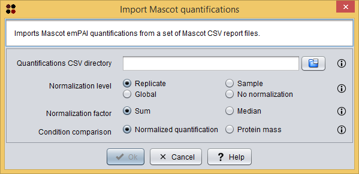
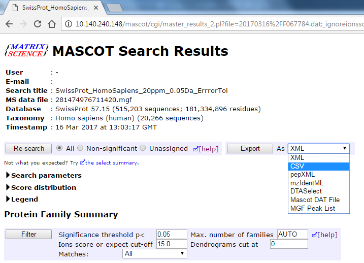

This operation allows you to import Mascot emPAI quantifications from a set of Mascot CSV report files.
Usage
You can execute this operation by clicking the menu option Import/Import Mascot quantifications.
A dialog will appear allowing you to choose the directory containing the CSV files and other parameters to perform data normalization. As you can see in the following image, this dialog requires you to provide the following information:

Import Mascot quantifications dialog
After clicking the Ok button, the imported Mascot quantifications are added as a Mascot quantifications datatype to the clipboard and automatically opened in the Mascot quantifications viewer.
Obtaining and organizing the Mascot CSV report files
The Mascot CSV report files can be obtained through the Mascot Search Results web interface as the following image shows.

Mascot Search Results web interface
After selecting the Export as CSV option, the following screen will appear, allowing you to select the information that you want to include in the reports. Here, you must select emPAI in the Protein Hit Information section in order to include the emPAI protein quantification values. To obtain the CSV files, click the Export search results button.
This way, you will obtain one CSV for each replicate in the dataset. In order to import these CSV files into S2P, you must rearrange them in the following way:
Sample_1=100 Sample_2=200
For instance, if you have two conditions (Condition_A and Condition_B) in your dataset and two samples with three replicates for each condition, this is how your Quantifications CSV directory may look like:
. |-- Condition_A | |-- protein-masses.txt | |-- Sample_A1.1.csv | |-- Sample_A1.2.csv | |-- Sample_A1.3.csv | |-- Sample_A2.1.csv | |-- Sample_A2.2.csv | |-- Sample_A2.3.csv | |-- Condition_B |-- protein-masses.txt |-- Sample_B1.1.csv |-- Sample_B1.2.csv |-- Sample_B1.3.csv |-- Sample_B2.1.csv |-- Sample_B2.2.csv |-- Sample_B2.3.csv